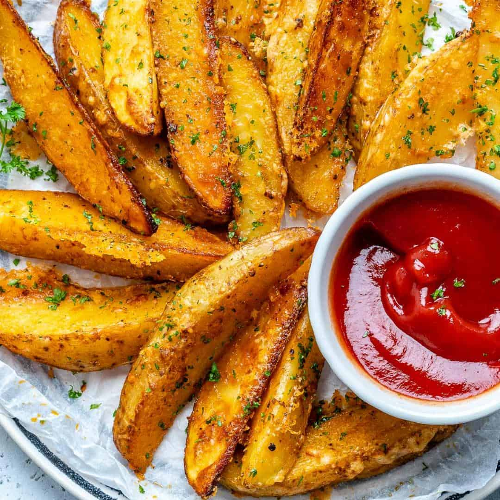

Mug Cake Recipe

Description
Ingredients
- 3 large potatoes
- 1/3 cup olive oil(80 mL)
- 1 teaspoon salt
- 1/2 teaspoon pepper
- 1 tablespoon garlic powder
- 1 tablespoon oregano
- 1 tablespoon paprika
- 1/2 cup vegetarian parmesan cheese(55 g)
Steps
- Preheat oven to 400°F (200°C).
- Thoroughly wash potatoes, cut in half, and slice into wedges.
- Toss wedges in olive oil and seasonings.
- Place on a baking sheet, skin side down.
- Bake 40-50 minutes.
- Enjoy!